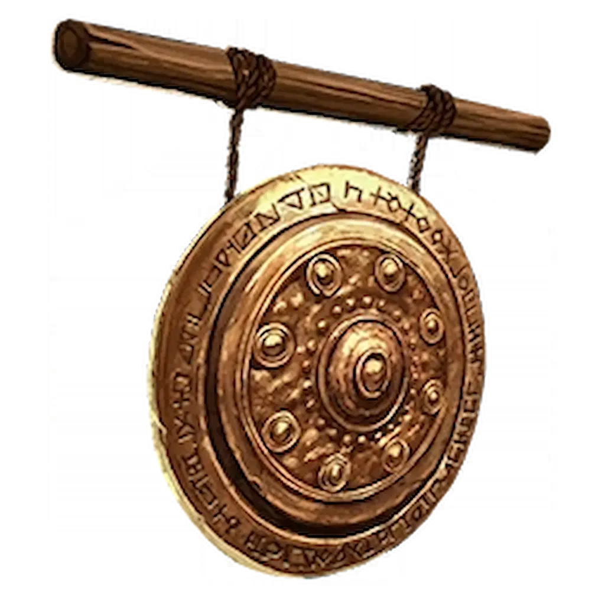
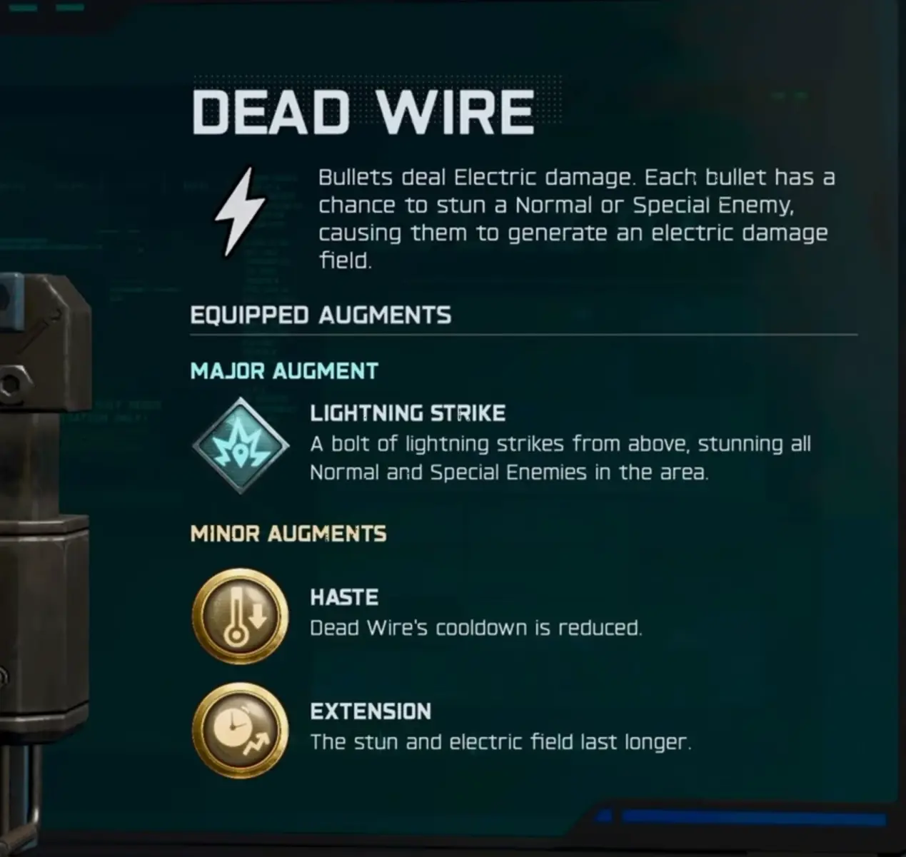
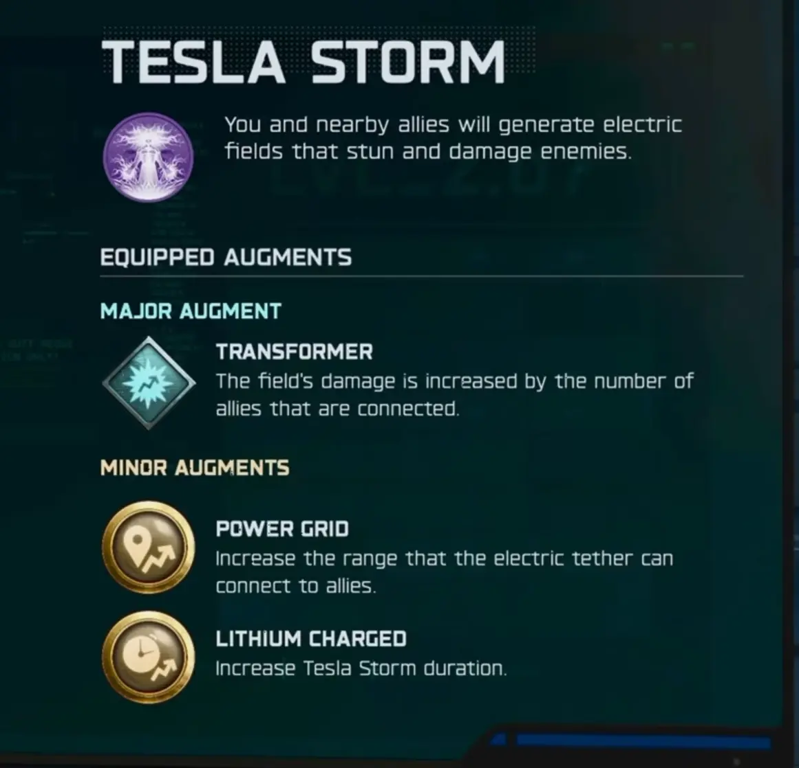
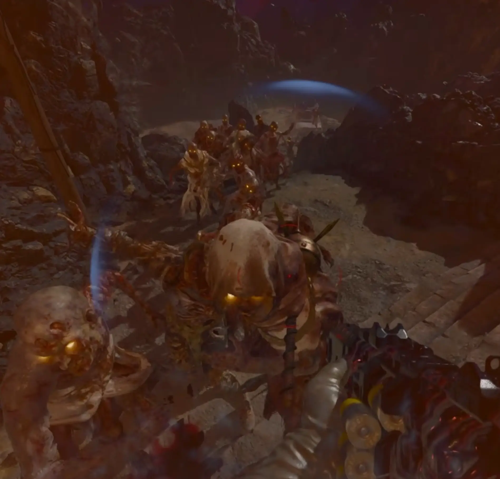
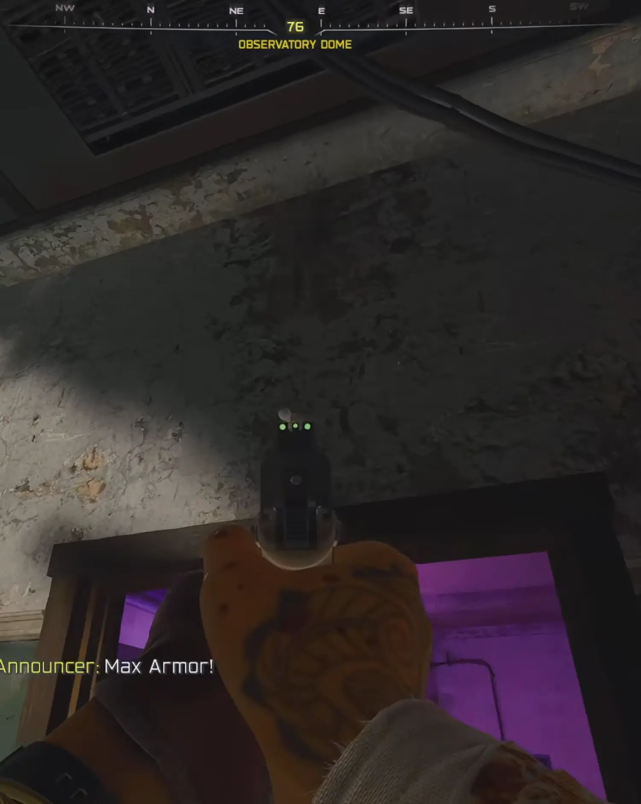
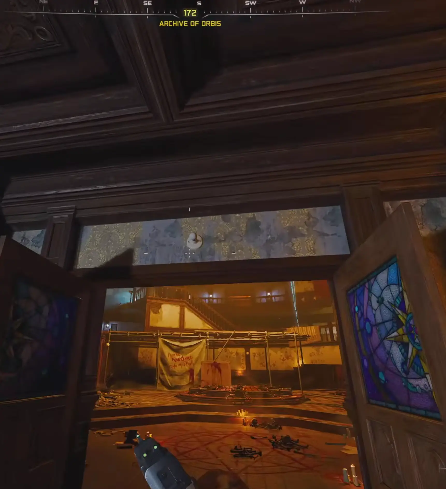
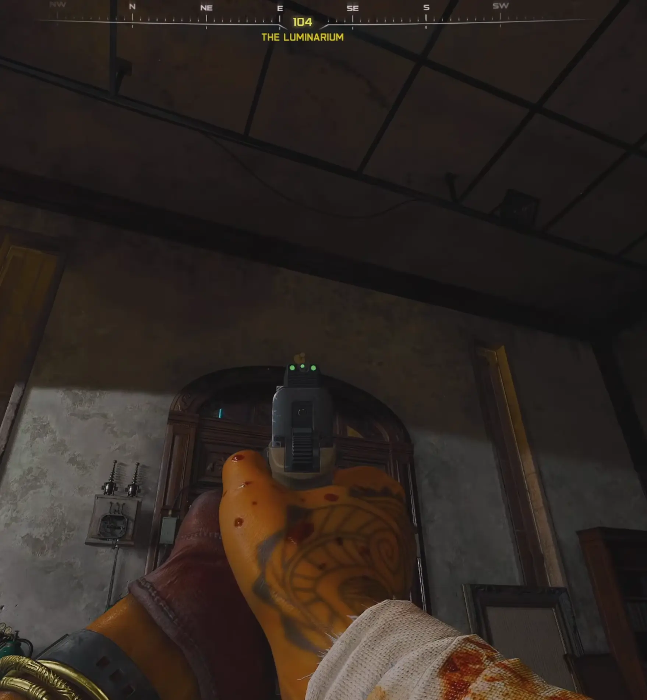

Musicie mieć ukończony główny Easter Egg na mapie Astra Malorum.

Zanim zaczniecie, upewnijcie się, że macie w łapach odpowiedni sprzęt:


Gdy dobijecie do Rundy 20, na mapie zacznie pojawiać się unikalny Rod Zombie (Zombie z prętem). Ten gość nie znika – będzie za Wami łaził po całej mapie, dopóki go nie wykorzystacie.
PRO TIP: Wybijcie wszystkie inne zombie w rundzie, żeby został tylko on. To ułatwi sprawę.

Po poprawnym ukończeniu trzech sekwencji obok Was pojawi się portal.
Musicie doprowadzić swojego „elektrycznego kumpla” do trzech przejść, nad którymi wiszą małe żarówki:



W lokacji Dziedziniec Obserwatora Gwiazd otworzy się zielony portal.